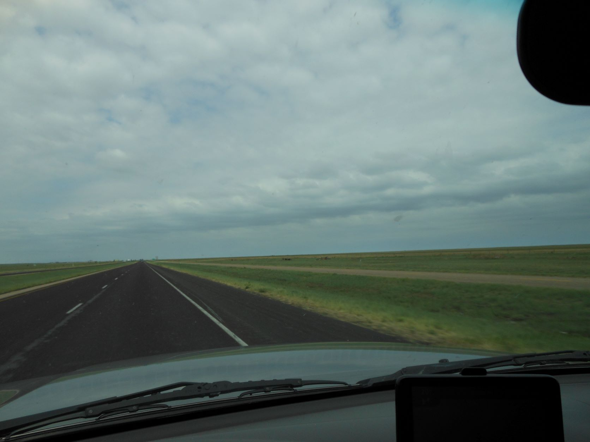
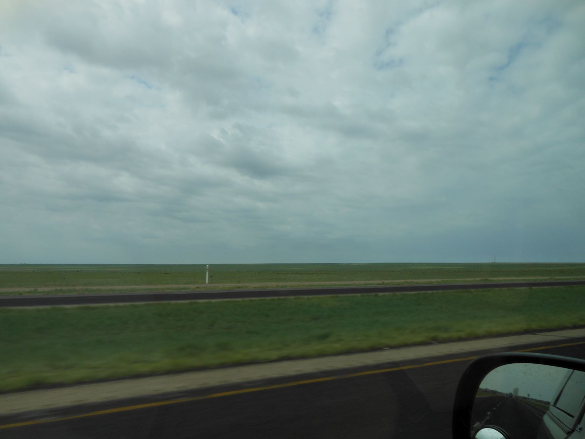
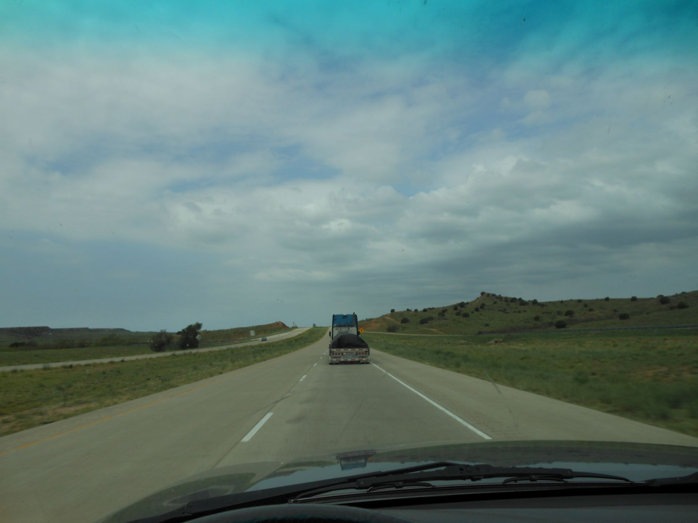
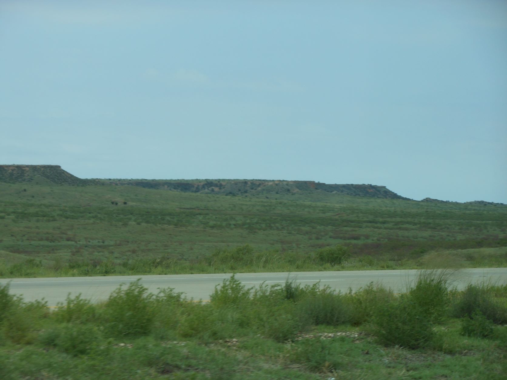

June 13, 2012 - Road to Glenrio, TX

Road to Glenrio, TX - West Texas - Original Route 66 running parallel - The long ribbon of highway

Road to Glenrio, TX - West Texas - Original Route 66 running parallel

Road to Glenrio, TX - West Texas

Road to Glenrio, TX - West Texas - Original Route 66 in the foreground